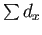
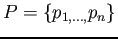
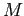
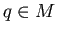
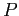
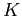

Siguiente: El algoritmo de árboles Subir: Fundamentos teóricos Anterior: Creación del descriptor Índice General
El método de búsqueda del vecino más cercano (NNS: del inglés, Nearest Neighbor Search) (2) es un método de gran utilidad. Se ha aplicado a gran variedad de aplicaciones como el reconocimiento de imágenes, la compresión de datos, los sistemas de recuperación de documentos, estadÃsticas y análisis de datos, entre otros. NNS es un problema de optimización que intenta buscar los puntos más cercanos en un espacio métrico: dado un conjunto de puntos  en un espacio métrico  y un punto de consulta , encontrar el punto más cercano a  en de forma eficiente, donde es un espacio euclÃdeo d-dimensional y las distancia es medida por ejemplo mediante la distancia euclÃdea.
Existe una variante al algoritmo NNS denominada k-NN (k-Nearest Neighbor) que a diferencia del anterior, evalúa a qué clase pertenecen los  vecinos más cercanos para decidir la clase. AsÃ, en el caso  se está en presencia del algoritmo NNS que se describió anteriormente
Resolver problemas de búsqueda de vecinos más cercanos, no resulta trivial en espacios de grandes dimensiones (49). No es usual encontrar algoritmos que posean un rendimiento mayor al de la búsqueda lineal (también conocida como ``búsqueda por fuerza bruta''), la cual resulta costosa computacionalmente y hasta a veces, imposible de usar en muchas aplicaciones. Es por esto, que se ha generado un gran interés en algoritmos que puedan realizar la búsqueda del vecino más cercano de forma aproximada, con lo cual es posible lograr mejoras significativas en tiempo de ejecución con errores de precisión relativamente pequeños y aceptables (6,49).
En el trabajo de Slipa-Anan y Hartley (1,19), se propuso la creación de una estructura de múltiples árboles KD o K-dimensionales aleatorios conocidos por su término en inglés como Randomized KD-Tree, que brinda la posibilidad de obtener resultados satisfactorios en un amplio rango de problemas (49). Más especÃficamente, para casos en los que se trata con vectores similares a los presentados en la Sec. 2.4 resulta una alternativa aceptable. Por ello, se utilizará el método descripto en (1,19) con los parámetros estudiados que se describen en (49).